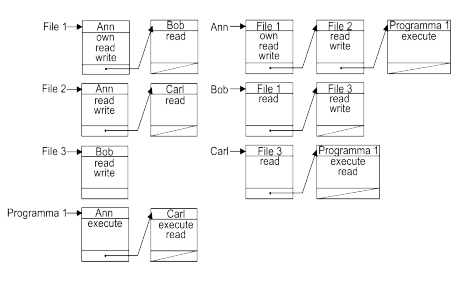

Torna alla pagina di Sicurezza & Privatezza
:: Appello d'esame di Sicurezza e Privatezza - 08/01/2007 ::
Domande
Rispondere brevemente ma in modo completo alle seguenti domande.
- Nell’ambito delle politiche discrezionali, definire i concetti di politica aperta e politica chiusa. Descrivere quali problemi possono sorgere dall’uso combinato di autorizzazioni positive e negative e fare un esempio.
- Dire cosa si intende per virus transiente, virus residente e virus polimorfico.
- Descrivere a cosa servono i sistemi di intrusion detection e quali sono le differenze tra i sistemi host-based e network-based.
- Dire cosa si intende per SQL injection, fare un esempio e illustrare in che modo è possibile difenderci da questa tipologia di attacco.
- Descrivere le tecniche di autenticazione basate su caratteristiche dell’utente.
- ACL e capability: cosa rappresentano? Illustrare i vantaggi e gli svantaggi.
- Descrivere il processo di autenticazione di PGP.
- Descrivere a cosa servono i numeri di sequenza del protocollo IPSec.
SOLUZIONE
1.
- politica aperta: autorizzazioni specificano negazioni all'accesso, quindi il soggetto può fare tutto ciò che eredita dalla sua gerarchia a meno di eccezioni.
- politica chiusa: autorizzazioni specificano permessi di accesso, quindi ogni permesso viene negato a meno di eccezioni.
L’uso combinato di autorizzazioni positive e negative conduce al problema di come le due autorizzazioni dovrebbero essere trattate nelle seguenti circostanze:
- Inconsistenza: per un accesso ci sono sia autorizzazioni negative che positive
- Non completezza: per un accesso non abbiamo né autorizzazioni positive né autorizzazioni negative
Esempio:
(Psicopatici, write, Necronomicon, +); (Poeti, write, Necronomicon, -)
Visto che Lovecraft è sia psicopatico che poeta può o non può scrivere il Necronomicon?
2.
- virus transiente: virus che ha una durata limitata all'esecuzione del programma, cioè l'esecuzione del virus termina con il programma. La vita del virus dipende da quella del programma che lo ospita.
- virus residente: la vita del virus è indipendente dal programma. Il virus è quindi in memoria e rimane attivo o può essere attivato come un programma stand-alone.
- virus polimorfico: virus che è in grado di modificarsi e che quindi assume un numero illimitato di forme. Cambia casualmente i dati che lo compongono, quindi per essere polimorfo non deve cambiare solo una parte, ma deve modificarsi tutto.
3.
WARNING
non trattato quest'anno
4.
L'SQL injection è un attacco rivolto alle applicazioni web e coinvolge non solo SQL, ma qualsiasi linguaggio di programmazione e qualsiasi DBMS.
L'attacco consiste nell'inserimento di codice maligno nelle query SQL, sfruttando la mancanza di controlli sui dati da input dell'applicazione web.
L'input può essere trasmesso in tre modi:
- URL (query string)
- form HTML
- cookie costruito su misura
L'attacco provoca:
- manipolazione indesiderata dei dati
- accesso ad aree riservate
- visualizzazione di dati riservati
Contromisure possibili sono:
- controlli sul tipo di dato: tramite l'utilizzo di alcune funzioni si forza una variabile ad appartenere ad un certo tipo.
- creazione di filtri tramite espressioni regolari: i dati in input vengono descritti da una espressione regolare. Ad esempio controllare che l'input sia formato solo dalle lettere dalla A alla Z.
- eliminazione di caratteri potenzialmente dannosi: si eliminano i caratteri che hanno un significato in un'interrogazione SQL, quindi , ; " '
- escape(\) di caratteri potenzialmente dannosi: il carattere sul quale viene effettuato il quoting (\) viene interpretato letteralmente.
5.
Autenticazione basata su Caratteristiche
Questo tipo di autenticazione si basa sulle caratteristiche fisiche(impronte digitali; impronta della retina) e comportamentali(timbro della voce; firma) dell'utente.
Richiede una fase iniziale(fase di enrollment) di misurazione(vengono effettuate più misurazioni della caratteristica che ci interessa, es: voce) e di definizione di un template, cioè un valore medio delle misurazioni effettuate.
L'autenticazione avviene confrontando il template(determinato nella fase iniziale) con la misurazione della caratteristica dell'utente che deve autenticarsi. Se la misura e il template coincidono l'autenticazione avviene con successo. Però in un sistema del genere è quasi impossibile ottenere perfetta corrispondenza, quindi l'autenticazione avviene all'interno di un intervallo di tolleranza che non deve essere né troppo ampio né troppo piccolo, quindi la soglia di tolleranza deve essere definita in modo da massimizzare i successi e minimizzare gli insuccessi.
- Vantaggi: è la forma di autenticazione più forte, infatti elimina le vulnerabilità dovute a impersonificazioni.
- Svantaggi: troppo costosa, intrusiva, potenziale mancanza di privacy.
6.
ACL e Capability sono due diversi metodi di memorizzazione della matrice di accesso, quindi stiamo parlando di politiche discrezionarie.
- ACL (access control list): memorizza per colonne. E' una lista dove ogni record è formato da un utente con le operazioni che possono essere eseguite sul file.
In questo caso è obbligatoria l'autenticazione dell'utente perché ciò che può essere eseguito su un oggetto dipende dall'identità dell'utente.
- Capability List: memorizza per righe.
ACL
Vantaggi:
- più immediato controllo delle autorizzazioni presenti su un oggetto.
- più efficiente nel controllo dell'accesso e revoca relativi a oggetti in quanto le operazioni per oggetti sono considerate prevalenti.
Svantaggi:
- più complesso recuperare tutte le autorizzazioni di cui gode un soggetto in quanto richiede la ricerca di tali autorizzazioni per ciascun oggetto.
- richiede di autenticare sempre i soggetti.
Capability
Vantaggi:
- più immediata determinazione dei privilegi di cui gode un soggetto.
- per un soggetto è sufficiente presentare la capability appropriata per guadagnare l'accesso ad un oggetto, questo è vantaggioso nei sistemi distribuiti in quanto permette di evitare le autenticazioni ripetute da parte di un soggetto.
Svantaggi:
- per recuperare tutte le autorizzazioni di accesso su un oggetto occorre esaminare tutte le capability.
- vulerabili all'attacco forgery: possono essere copiate e riutilizzate da terze parti che non godono delle autorizzazioni necessarie.
Nell'immagine abbiamo sulla sinistra ACL e sulla destra Capability:

Torna alla pagina di Sicurezza & Privatezza